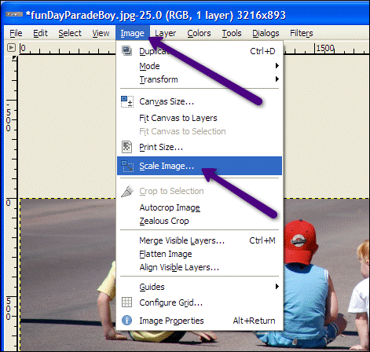
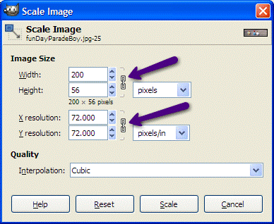
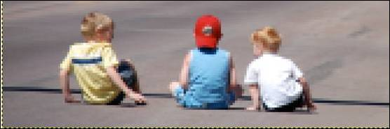

Changing Size
You can quickly change the size of an image by using Image/Scale Image from the image menu:

When the Scale Image dialog box comes up, make the choices you need. If you want to keep the image in proportion, make sure the lock is on so changing the height or width will automatically adjust the other dimension.
Here I rescaled a photo that was 3216 pixels wide to 200 pixels. Note how the height automatically calculated to 56 pixels. I also changed the resolution from 300 down to 72 to make the image as small as possible for the Web:

Important: You can always shrink/rescale a photo to a smaller size but if you try to make a smaller image larger you will experience pixelation.
Here is the 200 pixel wide image enlarged to fill this page. Notice how fuzzy the pixels are once they are enlarged.
